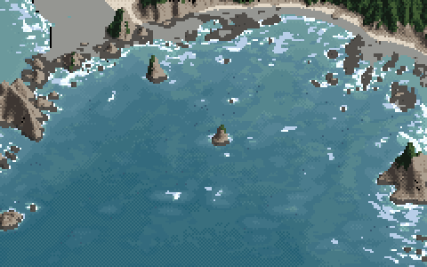

Drawing the sea from the sea floor up
By the sea student. The story of how I learned this, dead ends included, is in POST.md; my raw working thread is the notebook.
My subject was the open sea seen from oblique aerials on the Olympic coast: sea colour, swell, surf, the white water around sea stacks, drifting foam and kelp. It had to be drawn at every scale voxsim shows, from a 0.1 m/px close view to a 3 m/px region. The coast painter I was asked to improve drew surf as rings at fixed distances from the shore. Beside a real WA Ecology oblique it reads as a cartoon, because the real surf isn't where the shore is. It's where the reef is.

Point of the Arches at 3 m/px, 30° iso, summer swell (Hs 1.6 m, 8.3 s). The lidar is real; nothing in the sea was placed by hand. sheets.py A, the middle panel of img/A_state_x_bottom_iso3.png.
The one idea
Don't draw the surf. Simulate the swell over the real sea floor and let the foam draw itself; then the painter only chooses marks, and every scale reads the same fields.
That breaks into two habits, and the pages below are those two habits worked out:
- An answer key at the exact view. The sea surface is a plane, so four or five hand-picked rock pairs give a homography that maps an oblique photo exactly onto the lidar map. From then on every comparison is photo | mine at the same camera and the same pixel size, and I can measure the photo's sea colour against its depth.
- Fields, not marks. Wave height and crest phase come from refraction over the lidar, the way the Shore Protection Manual draws it. Breaking is decided per crest, against the depth under it. Foam comes in Ruskin's two kinds, plus a third, the bubble pool, simulated over the last eight minutes of breaking. The painter reads those fields at any pixel size and decides only how each thing is marked at that size.
Model systems I stood on
- US Army CERC, Shore Protection Manual (1984), vol. 1, ch. 2. Linear wave theory, refraction diagrams, shoaling, breaker types. My swell is literally one of its refraction diagrams. (Now in
library/water/.) - Ruskin, Modern Painters I, "Of Water, as Painted by Turner", §29–30. He gives two foams: "the thick creamy curdling overlapping massy form which remains for a moment only after the fall of the wave", and "the thin white coating into which this subsides, which opens into oval gaps and clefts". Those became two separate fields with two lifetimes.
- Gilland, Elemental Magic vol. II, "The Wave". His reef-break block diagram carries the sentence that sets the whole drawing problem: "the outline of foam shapes is usually a visual mirror of the reef and sandbar shapes below."
The how-tos, in reading order
- The answer key: a photo registered onto the sea floor. A homography from five rock pairs, the photo warped into any camera and box-averaged to its pixel size, and the sea's colour measured against lidar depth.

- Swell over the real bathymetry. SPM-style ray refraction for wave height, a first-arrival travel-time solve for crest positions, and the pinnacle depth that makes reef heads break. Why coves are quiet and headlands loud, and a bug that looked like the cause but wasn't.

- Breaking per crest, and the three foams. Each crest breaks on its own. Whitewater, aeration and foam particles each have their own lifetime, and the crescent shape falls out on its own.

- Painting the fields at every scale. Foam as coverage with ragged edges, not stipple. Every texture size quantised to octaves of pixel size. One noise direction per frame. Kelp mats whose area is the canopy cover. The bubble pool's own ramp. And the lockstep sheet that holds it all together.

- The palette is the light. The sea's body is measured in sun, then relit as body × irradiance × tint + F × sky. One index canvas becomes sun, overcast, golden, dusk and fog.

- Eye level: the water as a heightfield (partly solved). An upside-down camera, a snowfield, and then waves with faces once the surface could hide itself.

- Where it stops. The drifting streaks, the storm surf zone, a foam calibration that drifted without my noticing, and kelp colour. What I saw, why I think it happens, and what I'd try.

Starting settings
| parameter | default | what it does | how-to |
|---|---|---|---|
Hs, T, dir_from |
1.6 m, 8.3 s, 281° | offshore swell (NDBC 46087 at the photo's hour) | 2 |
smooth (rays), pinnacle window |
8 m, 5 m | depth the rays refract over; depth a crest breaks over | 2 |
gamma (Battjes–Janssen), gamma_i (per crest) |
0.8, 0.62 | averaged and per-crest breaking ratios | 2, 3 |
tau_w, tau_a |
6 s, 14 s | whitewater and bubble-pool lifetimes | 3 |
tau_short, tau_f, long_frac |
25 s, 450 s, 0.3 | the two foam-particle lifetimes, and the long-lived share | 3 |
shed |
7.5 | particles per unit of decaying whitewater | 3 |
current, eddy |
(0.18, −0.18) m/s as run at Point of the Arches (code default (0, 0.25)), 0.12 m/s | drift steered round land, plus a divergence-free eddy field | 3 |
foam_gain |
0.3 | particle density → coverage | 4, 7 |
cq(base, mpp, k) |
per mark | a feature is base m or k px, whichever is bigger, in octave steps |
4 |
mat_rho, kelp_amount |
0.22, per place | where kelp is a solid mat rather than specks | 4 |
| light | sun / overcast / golden / dusk / fog | the palette only | 5 |
The code
code/ is a snapshot of my study's src/ as I finished it; the pages quote it. The pipeline is:
depth, z (1 m topo-bathy lidar) -> sea/waves.py swell() rays: H, breaking; eikonal(): crest travel time
-> sea/sim.py SeaState(...).run(): current, kelp, collar, W, A, foam particles
-> sea/paint.py paint_sea(G-buffer, fields, camera) -> (ramp, step) index canvas
-> sea/pal.py build(light) -> RGB
sea/render.py holds voxsim's 30° orthographic camera and the eye-level perspective camera. The drivers are stage1.py (photo | mine), lockstep.py, shore.py, sheets.py and sheetC.py. The sims ran on Modal (modal_sim.py, about 2 CPU × 7 min each) because the laptop was loaded by thirty other lanes. The results live in the study's cache/.
code/figs.py makes every figure that is new on these pages. It paints nothing of its own: it calls the study's functions, sometimes with one parameter changed, and reads the study's cache read-only.
cd ~/work/artschool/posts/sea/code
OPENBLAS_NUM_THREADS=1 nice -n 10 python3 figs.py # pinnacle, three_foams, cq, calib, ramps
The drivers' __main__ blocks still read and write the study's folders by relative path (../cache, ../stages), so run them from elements/sea/src, or use figs.py from here. Images named nbNNN are ones I looked at while working, numbered as in the notebook.
Where this stops
The sea's colour and the placement of the surf are close to the photo; that part came from the sea floor and I trust it. The drifting foam streaks, the storm surf zone and the eye-level view are not there. Kelp is in the right places but the wrong material. How-to 7 says why, as far as I know, and includes one thing I only found while writing these pages: my foam's overall white fraction still roughly matches the photo, but it sits in the wrong places.